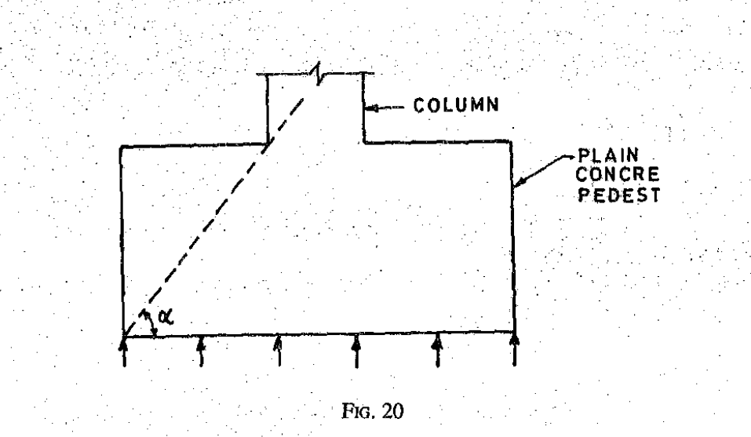
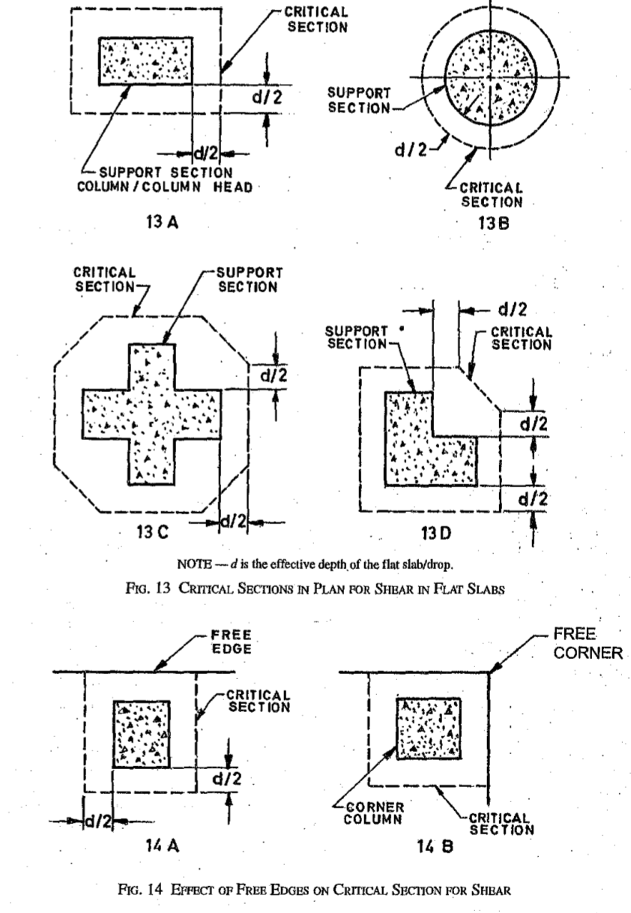
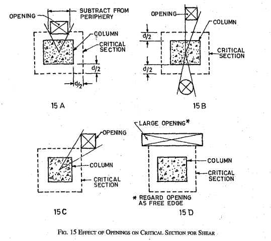

Footing
7.1 The concrete mix proportions chosen should be such that the concrete is of adequate workability for the placing conditions of the concrete and can properly be compacted with the means available. Suggested ranges of workability of concrete measured in accordance with IS 1199 are given below:
|
Placing Conditions |
Degree of Workability |
Slump |
|
Strip footings |
Medium |
50-100 |
11.1 General
The form work shall be designed and constructed so as to remain sufficiently rigid during placing and compaction of concrete and shall be such as to prevent loss of slurry from the concrete. For further details regarding design, detailing, etc, reference may be made to IS 14687. The tolerances on the shapes, lines and dimensions shown in the drawing shall be within the limits given below:
|
a) |
Deviation from specified dimensions of cross-section of columns and beams |
+ 12 mm - 6 mm |
|
b) |
Deviation from dimensions of footings |
|
|
1) Dimensions in plan |
+ 50 mm - 12 mm |
|
|
2) Eccentricity |
0.02 times the width of the footing in the direction of deviation but not more than 50mm |
|
|
3) Thickness |
± 0.05 times the specified thickness |
These tolerances apply to concrete dimensions only, and not to positioning of vertical reinforcing steel or dowels.
26.2.4 Special Members
Adequate end anchorage shall be provided for tension reinforcement in flexural members where reinforcement stress is not directly proportional to moment, such as sloped, stepped, or tapered footings; brackets; deep beams; and members in which the tension reinforcement is not parallel to the compression face.
26.4.2.2 For footings minimum cover shall be 50mm.
34.1 General
Footings shall be designed to sustain the applied loads. moments and forces and the induced reactions and to ensure that any settlement which may occur shall be as nearly uniform as possible. and the safe bearing capacity of the soil is not exceeded (see IS 1904).
34.1.1 In sloped or stepped footings the effective cross-section in compression shall be limited by the area above the neutral plane, and the angle of slope or depth and location of steps shall be such that the design requirements are satisfied at every section. Sloped and stepped footings that are designed as a unit shall be constructed to assure action as a unit.
34.1.2 Thickness at the Edge of Footing
In reinforced and plain concrete footings, the thickness at the edge shall be not less than 150 mm for footings on soils, nor less than 300 mm above the tops of piles for footings on piles.
34.1.3 In The case of plain concrete pedestals, the angle between the plane passing through the bottom edge of the pedestal and the corresponding junction edge of the column with pedestal and the horizontal plane (see Fig.20) shall be governed by the expression:
Where
q0 = calculated maximum bearing pressure at the base the pedestal in N/mm2, and
fck = characteristic strength of concrete at 28 days in N/mm2

34.2 Moment And Forces
34.2.1 In the case of footings on piles, computation for moments and shears may be based on the assumption that the reaction from any pile is concentrated at the centre of the pile.
34.2.2 For the purpose of computing stresses in footings which support a round or octagonal concrete column or pedestal, the face of the column or pedestal shall be taken as the side of a square inscribed within the perimeter of the round or octagonal column or pedestal.
34.2.3 Bending Moment
34.2.3.1 The bending moment at any section shall be determined by passing through the section a vertical plane which extends completely across the footing, and computing the moment of the forces acting over the entire area of the footing on one side of the said plane.
34.2.3.2 The greatest bending moment to be used in the design of an isolated concrete footing which supports a column, pedestal or wall, shall be the moment computed in the manner prescribed in 34.2.3.1 at sections located as follows:
- At the face of the column, pedestal or wall, for footings supporting a concrete column, pedestal or wall;
- Halfway between the centre-line and the edge of the wall, for footings under masonry walls; and
- Halfway between the face of the column or pedestal and the edge of the gussetted base, for footings under gussetted bases.
34.2.4 Shear and Bond
34.2.4.1 The shear strength of footings is governed by the more severe of the following two conditions:
- The footing acting essentially as a wide beam, with a potential diagonal crack extending in a plane across the entire width; the critical section for this condition shall be assumed as a vertical section located from the face of the column, pedestal or wall at a distance equal to the effective depth of footing for footings on piles.
- Two-way action of the footing, with potential diagonal cracking along the surface of truncated cone or pyramid around the concentrated load; in this case, the footing shall be designed for shear in accordance with appropriate provisions specified in 31.6.
31.6 Shear in Flat Slab
31.6.1 The critical section for shear shall be at a distance d/2 from the periphery of the column/capital/drop panel, perpendicular to the plane of the slab where d is the effective depth of the section (see Fig. 12). The shape in plan is geometrically similar to the support immediately below the slab (see Fig. 13A and 13B).
NOTE- For column sections with re-entrant angles, the critical section shall be taken as indicated in Fig. 13C and 13D.

31.6.1.1 In the case of columns near the free edge of a slab, the critical section shall be taken as shown in Fig. 14.
31.6.1.2 When openings in flat slabs are located at a distance less than ten times the thickness of the slab from a concentrated reaction or when the openings are located within the column strips, the critical sections specified in 31.6.1 shall be modified so that the part of the periphery of the critical section which is enclosed by radial projections of the openings to the centroid of the reaction area shall be considered ineffective (see Fig. 15), and openings shall not encroach upon column head.

31.6.2 Calculation of Shear Stress
The shear stress τv shall be the sum of the values calculated according to 31.6.2.1 and 31.6.2.2.
31.6.2.1 The nominal shear stress in flat slabs shall be taken as V / b0 d where V is the shear force due to design load, b0 is the periphery of the critical section and d is the effective depth.
31.6.2.2 When unbalanced gravity load, wind, earthquake or other forces cause transfer of bending, moment between slab and column, a fraction (1 - α) of the moment shall be considered transferred by eccentricity of the shear about the centroid of the critical section. Shear stresses shall be taken as varying linearly about the centroid of the critical section. The value of α shall be obtained from the equation given in 31.3.3.
31.6.3 Permissible Shear Stress
31.6.3.1 When shear reinforcement is not provided, the calculated shear stress at the critical section shall not exceed ksτc ,
Where
ks = (0.5 + βc) but not greater than 1, βc being the ratio of short side to long side of the column/capital; and
τc= 0.25 in limit state method of design, and 0.16 in the working stress method of design.
31.6.3.2 When the shear stress at the critical section exceeds the value given in 31.6.3.1, but less than 1.5τc Shear reinforcement shall be provided. If the shear stress exceeds 1.5τc , the flat slab shall be redesigned. Shear stresses shall be investigated at successive sections more distant from the support and shear reinforcement shall be provided up to a section. where the shear stress does not exceed 0.5τc While designing the shear reinforcement, the shear stress. carried by the concrete shall be assumed to be 0.5τc and reinforcement shall carry the remaining shear.
34.2.4.2 In computing the external shear or any section through a footing supported on piles, the entire reaction. from any pile of diameter DP whose centre is located DP/2 or more outside the section shall be assumed as producing shear on the section; the reaction from any pile whose centre is located DP/2 or more inside the section shall be assumed as producing no shear on the section. For intermediate positions of the pile centre, the portion of the pile reaction to be assumed as producing shear on the section shall be based on straight line interpolation between full value at DP/2 outside the section and zero value at DP/2 inside the section.
34.2.4.3 The critical section for checking the development length in a footing shall be assumed at the same planes as those described for bending moment in 34.2.3 and also at all other vertical planes where abrupt changes of section occur. If reinforcement is curtailed, the anchorage requirements shall be checked in accordance with 26.2.3.
34.3 Tensile Reinforcement
The total tensile reinforcement. at any section shall provide a moment of resistance at least equal to the bending moment on the section calculated in accordance with 34.2.3.
34.3.1 Total tensile reinforcement shall be distributed across the corresponding resisting section as given below:
- In one-way reinforced footing, the reinforcement extending in each direction shall be distributed uniformly across the full width of the footing;
- In two-way reinforced square footing, the reinforcement extending in each direction shall be distributed uniformly across the full width of the footing; and
- In two-way reinforced rectangular footing, the reinforcement in the long direction shall be distributed uniformly across the full width of the footing. For reinforcement in the short direction, a central band equal to the width of the footing shall be marked along the length of the footing and portion of the reinforcement determined in accordance with the equation given below shall be uniformly distributed across the central band:
where β is the ratio of the long side to the short side of the footing. The remainder of the reinforcement shall be uniformly distributed in the outer portions of the footing.
34.4 Transfer of Load at the Base of Column
The compressive stress in concrete at the base of a column or pedestal shall be considered as being transferred by bearing to the top of the supporting pedestal or footing. The bearing pressure on the loaded area shall not exceed the permissible bearing stress in direct compression multiplied by a value equal to
but not greater than 2;
Where
A1= supporting area for bearing of footing, which in sloped or stepped footing may be taken as the area of the lower base of the largest frustum of a pyramid or cone contained wholly within the footing and having for its upper base, the area actually loaded and having side slope of one vertical to two horizontal; and
A2=loaded area at the column base.
For the working stress method of design, the permissible bearing stress on a full area of concrete shall be taken as 0.25fck; for the limit state method of design the permissible bearing stress shall be 0.45fck.
34.4.1 Where the permissible bearing stress on the concrete in the supporting or supported member would be exceeded, reinforcement shall be provided for developing the excess force, either by extending the longitudinal bars into the supporting member, or by dowels (see 34.4.3).
34.4.3 Extended longitudinal reinforcement or dowels of at least 0.5 percent of the cross-sectional area of the supported column or pedestal and a minimum of four bars shall be provided. Where dowels are used, their diameter shall not exceed the diameter of the column bars by more than 3 mm.
34.4.2 Where transfer of force is accomplished by reinforcement, the development length of the reinforcement shall be sufficient to transfer the compression or tension to the supporting member in accordance with 26.2.
26.2 Development of Stress in Reinforcement
The calculated tension or compression in any bar at any section shall be developed on each side of the section by an appropriate development length or end anchorage or by a combination thereof.
26.2.1 Development Length of Bars
The development length Ld is given by
where
ϕ= nominal diameter of the bar,
σs= stress in bar at the section considered at design load, and
𝜏bd = design bond stress given in 26.2.1.1.
NOTES
- The development length includes anchorage values of hooks in tension reinforcement.
- For bars of sections other than circular, the development length should be sufficient to develop the stress in the bar by bond.
26.2.1.1 Design bond stress in limit state method for plain bars in tension shall be as below:
|
Grade of concrete |
M20 |
M25 |
M30 |
M25 |
M40 and above |
|
Design bond stress, τbd’ N/mm2 |
1.2 |
1.4 |
1.5 |
1.7 |
1.9 |
For deformed bars conforming to IS 1786 these values shall be increased by 60 percent.
For bars in compression, the values of bond stress for bars in tension shall be increased by 25 percent.
The values of bond stress in working stress design are given in B-2.1.
26.2.1.2 Bars bundled in contact
The development length of each bar of bundled bars shall be that for the individual bar, increased by 10 percent for two bars in contact, 20 percent for three bars in contact and 33 percent for four bars in contact.
26.2.2 Anchoring Reinforcing Bars
26.2.2.1 Anchoring bars in tension
- Deformed bars may be used without end anchorages provided development length requirement is satisfied. Hooks should normally be provided for plain bars in tension.
- Bends and hooks - Bends and hooks shall conform to IS 2502
- Bends-The anchorage value of bend shall be taken as 4 times the diameter of the for each 45° bend subject to a maximum of 16 times the diameter of the bar.
- Hooks-The anchorage value of a standard U-type hook shall be equal to 16 times the diameter of the bar.
26.2.2.2 Anchoring bars in compression
The anchorage length of straight bar in compression shall be equal to the development length of bars in compression as specified in 26.2.1. The projected length of hooks, bends and straight lengths beyond bends if provided for a bar in compression, shall only be considered for development length.
26.2.2.3 Mechanical devices for anchorage
Any mechanical or other device capable of developing the strength of the bar without damage to concrete may be used as anchorage with the approval of the engineer-in-charge.
26.2.2.4 Anchoring shear reinforcement
- Inclined bars - The development length shall be as for bars in tension; this length shall be measured as under:
- In tension zone, from the end of the sloping or inclined portion of the bar, and
- In the compression zone, from the mid depth of the beam.
- Stirrups-Notwithstanding any of the provisions of this standard, in case of secondary reinforcement, such as stirrups and transverse ties, complete development lengths and anchorage shall be deemed to have been provided when the bar is bent through an angle of at least 90° round a bar of at least its own diameter and is continued beyond the end of the curve for a length of at least eight diameters, or when the bar is bent through an angle of 135° and is continued beyond the end of the curve for a length of at least six bar diameters or When the baris bent through an angle of 180° and is continued beyond the end of the curve for a length of at least four bar diameters.
26.2.2.5 Bearing stresses at bends
The bearing stress in concrete for bends and hooks described in IS 2502 need not be checked. The bearing stress inside a bend in any other bend shall be calculated as given below:
where
Fbt = tensile force due to design loads in a bar or group of bars,
r = internal radius of the bend, and
ϕ= size of the bar or, in bundle, the size of bar of equivalent area.
For limit state method of design, this stress shall not, exceed where fck is the characteristic cube strength of concrete and a, for a particular bar or group of bars in contact shall be taken as the centre to centre distance between bars or groups of bars perpendicular to the plane of the bend; for a bar or group of bars adjacent to the· face of the member a shall be taken as the cover plus size of bar (ϕ). For working stress method of design, the bearing stress shall not exceed .
26.2.2.6 If a change in direction of tension or compression reinforcement induces a resultant force acting outward tending to split the concrete, such force should be taken up by additional links or stirrups. Bent tension bar at a re-entrant angle should be avoided.
26.2.3 Curtailment of Tension Reinforcement in Flexural Members
26.2.3.1 For curtailment, reinforcement shall extend beyond the point at which it is no longer required to resist flexure for a distance equal to the effective depth of the member or 12 times the bar diameter, whichever is greater except at simple support or end or cantilever.
In addition 26.2.3.2 to 26.2.3.5 shall also be satisfied.
NOTE-A point at which reinforcement is no longer required to resist flexure is where-the resistance moment of the section, considering only the continuing bars, is equal to the design moment.
26.2.3.2 Flexural reinforcement shall not be terminated in a tension zone unless anyone of the following conditions is satisfied:
- The shear at the cut-off point does not exceed two-thirds that permitted, including the shear strength of web reinforcement provided.
- Stirrup area in excess of that required far shear and torsion is provided along each terminated bar over a distance from the cut-off point equal to three-fourths the effective depth of the member. The excess stirrup area shall be not less than 0.4 bs/ƒy’ where b is the breadth of beam, s is the spacing and ƒy is the characteristic strength of reinforcement in N/mm'. The resulting spacing shall not exceed d/8 βb where βb is the ratio of the area of bars cut-off to the total area of bars at the section, and d is the effective depth.
- For 36 mm and smaller bars, the continuing bars provide double the area required for flexure at the cut-off point and the shear does not exceed three-fourths that permitted.
26.2.3.3 Positive moment reinforcement
- At least one-third the positive moment reinforcement in simple members and one-fourth the positive moment reinforcement in continuous members shall extend along the same face of the member into the support, to a length equal to Ld/3.
- When a flexural member is part of the primary lateral load resisting system, the positive reinforcement required to be extended into the support as described in (a) shall be anchored to develop its design stress in tension at the face of the support.
- At simple supports and at points of inflection, positive moment tension reinforcement shalt be limited to a diameter such that Ld computed for ƒd by 26.2.1 does not exceed
where
M1 = moment of resistance of the section assuming all reinforcement at the section to be stressed to ƒd ;
ƒd = 0.87 ƒy in the case of limit state design and the permissible stress σst in the case of working stress design;
V = shear force at the section due to design loads;
Lo = sum of the anchorage beyond the centre of the support and the equivalent anchorage value of any hook or mechanical anchorage at simple support; and at a point of inflection. Lo is limited to the effective depth of the members or 12ϕ, whichever is greater; and
ϕ = diameter of bar.
The value of M1 /V in the above expression may be increased by 30 percent when the ends of the reinforcement are confined by a compressive reaction.
26.2.3.4 Negative moment reinforcement
At least one-third of the total reinforcement provided for negative moment at the support shall extend beyond the point of inflection for a distance not than the effective depth of the member of 12ϕ or one-sixteenth of the clear span whichever is greater.
26.2.3.5 Curtailment of bundled bars
Bars in a bundle shall terminate at different points spaced apart by not less than 40 times the bar diameter except for bundles stopping at a support.
26.2.4 Special Members
Adequate end anchorage shall be provided for tension reinforcement in flexural members where reinforcement stress is not directly proportional to moment, such as sloped, stepped, or tapered footings; brackets; deep beams; and members in which the tension reinforcement is not parallel to the compression face.
26.2.5 Reinforcement Splicing
Where splices are provided in the reinforcing bars, they shall as far as possible be away from the sections of maximum stress and be staggered. It is recommended that splices in flexural members should not be at sections where the bending moment is more than 50 percent of the moment of resistance; and not more than half the bars shall be spliced at a section.
Where more than one-half of the bars are spliced at a section or where splices are made at points of maximum stress, special precautions shall be taken, such as increasing the length of lap and/or using spirals or closely - spaced stirrups around the length of the splice.
26.2.5.1 Lap splices
- Lap splices shall not be used for bars larger than 36 mm; for larger diameters, bars may be welded (see 12.4) ; in cases where welding is not practicable, lapping of bars larger than 36 mm may be permitted, in which case additional spirals should be provided around the lapped bars.
- Lap splices shall be considered as staggered if the centre to centre distance of the splices is not less than 1.3 times the lap length calculated as described in (c).
- Lap length including anchorage value of hooks for bars in flexural tension shall be Ld (see 26.2.1) or 30ϕ whichever is greater and for direct tension shall be 2Ld or 30ϕ whichever is greater. The straight length of the lap shall not be less than 15ϕ or 200 mm. The following provisions shall also apply:
Where lap occurs for a tension bar located at:
- top of a section as cast and the minimum cover is less than twice the diameter of the lapped bar, the lap length shall be increased by a factor of 1.4.
- corner of a section and the minimum cover to either face is less than twice the diameter of the lapped bar or where the clear distance between adjacent laps is less than 75 mm or 6 times the diameter of lapped bar, whichever is greater, the Jap length should be increased by a factor of 1.4.
Where both conditions (1) and (2) apply, the lap length should be increased by a factor of 2.0.
NOTE - Splices in tension members shall be enclosed in spirals made of bars not less than 6 mm diameter with pitch not more than 100 mm.
- The lap length in compression shall be equal to the development length in compression, calculated as described in 26.2.1, but not less than 24 ϕ
- When bars of two different diameters are to be spliced, the lap length shall be calculated on the basis of diameter of the smaller bar.
- When splicing of welded wire fabric is t6 be carried out, lap splices of wires shall be made so that overlap measured between the extreme cross wires shall be not less than the spacing of cross wires plus 100 mm.
- In case of bundled bars, lapped splices of bundled bars shall be made by splicing one bar IS 456: 2000 at a time; such individual splices within a bundle shall be staggered.
26.2.5.2 Strength of welds
The following values may be used where the strength of the weld has been proved by tests to be at least as great as that of the parent bar.
- Splices in compression - For welded splices and mechanical connection, 100 percent of the design strength of joined bars.
- Splices in tension
- 80 percent of the design strength of welded bars (100 percent if welding is strictly supervised and if at any cross-section of the member not more than 20 percent of the tensile reinforcement is welded).
- 100 percent of the design strength of mechanical connection.
26.2.5.3 End-bearing splices
End-bearing splices shall be used only for bars in compression. The ends of the bars shall be square cut and concentric bearing ensured by suitable devices.
34.4.3 Extended longitudinal reinforcement or dowels of at least 0.5 percent of the cross-sectional area of the supported column or pedestal and a minimum of four bars shall be provided. Where dowels are used, their diameter shall not exceed the diameter of the column bars by more than 3 mm.
34.4.4 Column bars of diameters larger than 36 mm, in compression only can be dowelled at the footings with bars of smaller size of the necessary area. The dowel shall extend into the column, a distance equal to the development length of the column bar and into the footing, a distance equal to the development length of the dowel.
34.5 Nominal Reinforcement
34.5.1 Minimum reinforcement and spacing shall be as per the requirements of solid slab.
34.5.2 The nominal reinforcement for concrete sections of thickness greater than 1 m shall be 360 mm2 per metre length in each direction on each face. This provision does not supersede the requirement of minimum tensile reinforcement based on the depth of the section.